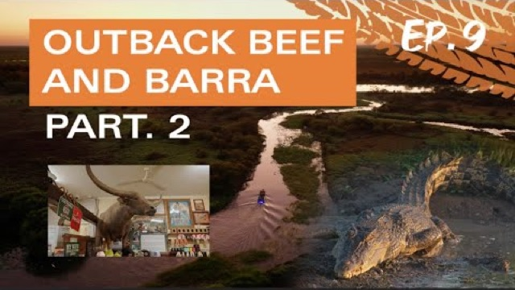

Oz Off Road TV
Outback Beef and Barra — part 2
Tuesday 4 February 2025
Oz Off Road TV
Tuesday 4 February 2025

Originally broadcast on Oz Off Road TV. Watch on Oz Off Road TV.
Last time on Oz off Road TV, we kicked off at Old Cork Station in the Channel Country, popped into the famous Walkabout Creek Hotel, checked out the abandoned uranium mine at Mary Kathleen, made our way to Adele's Grove, and finished up at the Northern Territory Outback town of Daly Waters. On this episode, our Top End adventure continues, we meet the man behind the Daily Waters pub, catch up with Tom Curtin at the Outback experiencing Catherine, pop into Adelaide River, explore the real Top End, check out a pub or 2, and take in what's arguably Australia's best sunset. So settle in and come on the adventure with us here on Ozoffroad TV. Keep it down on low bush track.
Yeah, like it like that. The weekend comes, now's time to go. All's out, bro. Time for the show.
Yeah. Our adventure kicks off where we left off last time at Daily Waters, we make our way north through to Larrimer, stop off at Catherine and Adelaide River as we make our way to corroborate Billabong, Humpty Doo, then on to Dundee Beach. Okay, here we are at probably the most famous pub, not only in the northern territory, but in the whole country. I know we say that about a couple of pubs, but there is no other pub, anywhere in Australia, like the Daily Waters hub.
You need to come and call in here if you're travelling, and you need to meet this bloke who owns the pub. Timmy, how are you, son? Yeah, good, mate. How are you going?
Good to see you again, mate. Been a couple of years. Magnificent day. It is, mate.
It's always a great day, especially when you're above the ground, eh? You're right there. Mate, the daily water's pub. It is more than just a pub, isn't it, mate?
This is an outback experience. Camping, caravan spots, and a pub that's just got character fallen out of it everywhere. Yeah, look, it's a special pub because it's off the road, it's about 6 kilometres in from the main highway. People just come in every day.
It's like Fed Income, Australia in the '50s. Not a lot of rules. There's some laws, as a respect. Yep. Respect for the place.
You've had the pub for about 9 years. What was it like when you got here? Because you've done a lot of work here. You've even done.
I haven't been here for about 3 or 4 years and you've even done more since then. Yeah, look, it's we've virtually rebuilt the place. It only had about, I think, 11 rooms. I think we've got about 64 now. And the junkyard were built.
We've extended all the sites in the caravan. We've rebuilt the joint. You mentioned the junkyard. Mate, where are you finding this stuff?
I mean, you've got FJ Holden that look like they've come off the showroom. I love different things. I hate the word museum, because that's dead from the arse up. I've been doing it for 40 years, my accountant hates it.
My wife hates it. Taxation departmentated. There's not too many clowns that would bring out that sort of gear. I mean, evening costs.
I think it costs nearly 200,000 to bring it up from south and I, it started off as just a one or 2 motorbikes. One thing I've got to give credit to is the kids. They've got all the themes, they know how to make things look old and whatever. And we're just doing another shed, which I've probably got another half again and a half.
same sort of quality to go in it, you know? Because I'll be here to a die, I reckon. So, mate, during the peak season, when it's packed, he's full on, how many people would you get near? Well, June and July is probably the biggest ones, and, of course, school holidays will do 500 mils a night.
Mate, we can't let you go without telling us the beef and barrow, that's the go. That is. The beef and burrow is pretty special. That's what they come for.
We normally do about 150 sittings every night, and yeah, it's an institution for that, of course, live music, they love the music, right? And one thing they do love. They love the animals, you'll see walking around. Here they come now behind you.
But it's a great place. You know, you have your problems, but hey, we sort it out. Territory style. There you go.
Timmy. Thanks, mate. All right, mate. take it easy.
Thank you, mate. Old mate, Tim, certainly, he's a northern territory character, but more importantly, he's a passionate territorian. The Daily Waters pub is one of a kind and should be on every traveler's bucket list. Whatever you do, do not drive past here if you're in these parts.
And welcome back to the Camping and Off Road radio show as being broadcast right around the country, on your weekend wireless, and of course, on podcast. Put a bit to get through this hour as we get stuck into it broadcasting here from the Daily Waters campground here right beside the pub. We are on territory time. How good is territory time?
We love it. We are very lucky to be able to do the broadcast of the camping and off-road radio show from locations just like this. And with this week's show done, it's time to get out there and hit the road again. A big thanks to Tim and the team for putting up with us out there.
We just loved it. Well, that was Daly Waters. How good is that place? I mean, you think about some of the places that you're travelling Australia, that's the real deal there.
It's like Australia in the old days. The culture of this country is not lost at daily waters, that's for sure. It really grounds it, gets you back to what this country is all about, and what it was built on, that character. I just love it.
My mate, what do you reckon? You get fined for driving past there. So you don't want to get fined, so you better stop in there. Anyway, we're heading north now.
We're, um, we're gonna stop off at little town. It's not that far up the road, actually, only about 88K's or something. I saw a sign. Which, basically, was made famous for not really good reasons.
The town of Larimer is located on the Stuart Highway, about 182 kilometres south of Catherine. It's famous for its historic outback pub, Pink Panthers and its famous pies. A typical northern territory outback town with some caravan and camping thrown into the mix. But this town has a mystery all of its own, which is still unsolved to this day.
In December, 2017, 70 year old Paddy Moriarty and his dog, Kelly, vanished after a day at the pub and have never been seen since. Paddy jumped on his quad bike along with his dog, and started off on the 400 metre trip home, never to be seen again. An intense police investigation, and even a film documentary has failed to provide any real answers to what happened to old Paddy, and his dog, and a reward is still offered for their whereabouts today. In light of that, we weren't sure what to expect, but pop in if you're going past, the pub is worth a look.
I've been to Larrimer. And let me tell you, the gourmet pies here, A gray. Make sure you stop in and grab it on your way past. Well, we've had our pie stop in Larrimer, and that's, uh, onwards northbound, as we head towards Catherine.
I'm gonna stop off at Catherine and pop in and see a mate of mine. He's a great bloke, running something pretty special there in Catherine, so I'm looking forward to catching up with him. Beautiful out here in these open roads. I love the Stuart Highway, as I've said, so we'll get ourselves to Catherine and say good day to Omain.
Well, here we are at the Outback Experience in Catherine, how good is this place? It is quite unbelievable. If you're travelling through the Northern Territory, You've got to stop here for that feed income, Australian experience. This is the real deal out here, and I'm with the owner of the Outback experience, and he's got a lot of talents, this bloke, Tom Curtin.
Tom, how are you, son? Good, mate. How you going? to see you again.
Yeah, good to see you too, mate. Mate, tell us about this place. I mean, I've been here before, which is why I wanted to come back and show as many people at this place as we can. What can people experience here in Catherine when they come to this outback experience?
Yeah, well, basically we do real life force demonstrations here, starting under saddle. We got a lot of horses still from the cattle stations. We train them here for up to 6 weeks, and we just use them, the first part of the show is all about trying to catch that horse, put a saddle on it, possibly even ride it. Other times, we just try to get someone out of the crowd to jump on porous.
That won't be me, by the way, this next show. Or see how we go. But and then, yeah, we also train a lot of working dogs. So a lot of people give us dogs that don't like or get along with.
We just train the heck out of them, and we sell them to farmers all around the country to work sheep or cattle as well. And we intertwine a few stories and songs as we go. Yeah, absolutely. So, basically, you do all this as part of the business, but then with the actual experience that you show people, you're demonstrating it to the public, what goes on here.
Yeah, that's right. It's pretty real and raw as well. It's not really a polish show where it's flying by the seat of her pants 90% of the time. And I think people can see that, you know, when a young dog runs off or a horse bucks, they can see it is real and we're just getting a job.
or trying to do a job. Yep, you're employing a few people from the local area too, which is good. How many people you got here giving your hand with everything? Yeah, we've got about 10 now, on the books, helping out, and they're also very keen in training horses, training dogs, and so I'm actually training them in the show as well, to get their confidence up.
They're very good, but it's also under pressure. You got to also talk to the crowd and tell them what you're doing, and even when it goes pear shaped, You've got to keep a cool mind and keep getting all the animals back together and the show's got to keep rolling. Mate, we've been seeing a lot of traffic on the road, people travelling, a lot of caravaners, a lot of families travelling, which is, I think, the numbers have increased.
You're seeing that, but they must have a great time when they get here. Yeah, they do. It's very much a family show. We got a lot of kids, a lot of young families now hitting the road, particularly after COVID.
I think it's here, it's the connection with all the animals. You know, there's Buffalo and donkeys and goats and you name it. But the kids love it. They're, um, some actually are in tears when they're going because they, they don't want to leave.
But it's, you know, it's good to see that connection that people and families get to have travelling through. And look, apart from all of this, you're also a fairly recognisable and accomplished country music artist yourself and work with some of the biggest names in Australia. How's the music going, mate? It's ticking along.
I try to write a lot of songs, whether I'm in the saddle, riding a horse, or in the truck touring. We tour 6 months every year. I think this will be our ninth year, coming up. We do about 70 shows around the country, and yeah, we load up the horses, the dogs, the music gear, hit the road.
But yeah, just recorded my 6th country music album and release on a few songs. They're on Spotify, Apple Music, or even YouTube. We're learning all about YouTube and video clips and things like that now. So it's, you got to keep up with all this technology, they reckon.
Tell me about it. A horse dog, an even goat whisperer. Tom Curtain's outback experience is something special. Not only great entertainment, it's actually very educational as you get to see Tom and his team up close, working with special animals that are part of the working backbone of Australia.
Forget Yellowstone, where else can you see cowboys playing a guitar while singing and working a horse, only in the territory? Tom, thanks your hospitality, mate. No worries, Doc. Great to see you again, mate.
Good to be here, mate. Here it is, the Outback experience, if you're travelling through the Northern Territory. If you're one of the 1000s of people that are doing that, make sure you pop in here and bring the kids along, have a great time. Start of the day.
We've been building this trip. We haven't had much of this for the first time, so... went on the cereal every day. Another day in paradise, though. We've got a bit more time up our sleep this morning. We've been cooking with a bracket, what time?
As a hungry young man from another land, I was chasing down my dreams. Heading northwest, put myself to the test. Busting out the scene. Like a bullet again, I just couldn't waste.
Man I had a lot to live. The people in the land had other plans. And I was gonna crash and burn until an old man said. He said.
It won't happen overnight, and she'll be right. But I'm clear at your time. If you ever stop to wonder why it gets a little longer, Running along territory time.
Gotta learn to wait for the give and take. Let's will alive. To state of mind Running on territory time.
Well, we're off for a cracking day again today. How good was it at the outback experience? And it was good to catch up with the old mate, Tom Curtin, I haven't seen him for a few years. Oh, he's got to be one of Australia's leading dog whisperers, I reckon.
But anyway, off we go now. We're actually gonna go and check out Adelaide River now. We'll check out the 303 bar, and I haven't been there for a few years. There's a very special place just down the road.
Some of you will know about it. If you don't, we're gonna show you shortly. So, uh, we'll make our way there, we'll stop in there at the 303 bar, and then, uh, we're off to Darwin. Right. Run on tearing to time.
Let's start to wonder why it takes a little longer, turn on tyranny time. We are currently standing here at the Adelaide River War Cemetery. I've said it on the radio for years, and if you travel through these parts, it is a must to stop here. In fact, it'd almost be un Australian not to pop in here, have a look, and just pay your respects for the people that we lost during the Darwin bombings and in World War II.
They've done a great job here with the cemetery, and there's actually a little information, Tim, that you can sit there, you can watch the video, and it tells the story, the stories of lost mates, told by those who actually experienced it. On the morning of February 19, 1942, World War II found its way to Australia's mainland, when formations of 188 Japanese aircraft mounted a deadly air raid on Darwin. In fact, more bombs were used during the Darwin raid than the attack on Pearl Harbour. Over 230 people were killed with hundreds wounded, around 30 aircraft were destroyed, and 9 ships sunk, and many military facilities were damaged or destroyed.
Darwin itself was not the only place to be attacked, with bombing raids spreading as far east as Townsville, and as far south as Pine Creek, bombing commenced at least 111 times between February 1942, and November 1943. To avoid panic down south and throughout the rest of Australia, it was decided to not spread the news of the Darwin bombing, and the North took the brunt of the attack all on its own at the time. Many lives were lost, including civilians, and some of their stories can be found at the Adelaide War cemetery, and throughout Darwin itself. When you walk in and read the stories of those lives that were lost, it's certainly very moving.
And the place just seems to be in silence, and there are a few visitors here today, and there's not a sound here. It's just quite incredible, just do yourself a favour. Come in and have a look at the Adelaide River War Cemetery, and, um, if anything, pay your respects and have a look and read some of those stories. Their visit to Adelaide River is complete without visiting the 303 bar in the Adelaide River Inn. Located behind the Puma servo, the 303 bar is basically outdoor seating in a tropical, like beer garden, with country music playing through speakers mounted in trees. The atmosphere is great, plus cold beers and great food is on offer with a souvenir shop inside.
A definite highlight is Charlie the Buffalo, who has been stuffed and stands proudly on the bar. If he looks familiar, that's because Charlie is the actual buffalo, who was blocking the road in the movie Crocodile Dundee. The 303 bar is one of my favourite pubs and is a typical northern territory watering hole. With caravan and camping facilities out the back, I speak from experience when I say it's very easy to spend a few days here.
Well, we continue along the Stuart Highway. We're heading to a little place called Nunamar now, just sort of outside of Darwin. The Nunamar Tavern, which I think is one of the territory's oldest hotels. There's a campground attached to that, so we're gonna base ourselves there for a few days, unhitch the van, and then we can go out and do some day trips, and a bit of barramundi fishing as well.
So looking forward to all of that. Outside Tempe, 35 degrees. You gotta love it, the middle of winter, up in the territory. How good is it?
And we're on territory time as well. I mean it just doesn't get any better than this, does it? After an early night, it's an early start, but for a pretty good reason, as I want to introduce you to a good bloke, and probably to one of my favourite locations in Australia, Glenwaddy Watt is a good mate of mine, and the owner operator of Barefoot Fishing Safaris in the Top End. He's been a weekly regular on my radio show for about 6 years now, and he's forgotten more about fishing in these parts than I'll ever know.
And that will become pretty evident a little bit later on. Now, as I mentioned, this is one of my favourite locations in the country. And what he has promised to bring me back to this magical place. Corroborate Billabong is the definition of nature at its best, part of the Merry River system, and located on the way out to Kakadu, this place is what I call the real Top End.
I told you, how good is this place? Untouched nature on full display. It doesn't get much better than this. If you want to find yourself, come out here, it's as good as it gets.
For me, this place is magical, I absolutely love it here. It's not hard to be impressed by this. For me, this is the real Australia. Untouched, natural waterways with the wildlife show that you'd pay money for, and as we make our way to our first fishing spot, we'll just enjoy the ride and take it all in.
No city life chaos out here. This is the territory. Well, mate, this is what you call the real deal. You're a good man.
What are you bringing us up here? It's a bit chilly this morning, mate, but these guys are out here having a little Sunday, aren't they? Yeah, Jesus, a few around too, isn't he? Another couple down here.
This is the real deal. You want the Top End experience. You gotta come here. I reckon.
Yeah, well, I mentioned all the gear and no idea. Well, stand by, I wasn't telling porkies. Oh, shit. You get that one, Bill? Got it. Hang on.
There's more. I'm just getting started. You might be a little pup, eh? I'll tell you, that's a worry.
Do you want me to cut? Really stretching me up through the rod here. There you go, what do you want with? Look at that.
Can you do that, Dad? Are you serious? What do you know about how to do it? That would come up here last time, and tell me how to do that.
Now, what he tells me the barrer dropped when the temperature drops, but fair dinkum. I reckon they saw me coming and they're just running scared. Well, I'll just get this one out there. How often do you take people out here, Audie?
Oh, as often as I can, mate. This is one of the favourite spots for all fishing guides, I think, and anyone who comes up to the territory, you gotta sometimes stop fishing just to take it all in if you're a mad fisherman. Come out here and get some fish they shed. You slept in too late, mate.
As long as that fish market open. Back at Palmerston. We'll get onto them, Marty. Good faith in you, mate.
Why isn't this fly catching any fish? Maybe I should have brought one that I know works instead of just making some up yesterday when I was on the piss? Hang on. Things could be on the turn.
Oh, oh. Oh, there you go. You got him. Pulling him.
Pull, pull, pull, harder. Pull in. Pull him. Pull out. Come on.
Ooh, he's off. Let him get away. We go, ooh. Got him, got him.
pull, pull, pull, pull. Harder, pulling, harder. Pull, keep pulling. Keep pulling.
Not much luck, mate, are you? You know I've got my own spotty, don't you? Back in the car park. The last time what was you?
The younger one down there. I know he's not taking me back down there again. You kept bringing me up here. He can keep the more ones for yourself live.
Oh, shuffle us along. Oh, that got him. That got him. Yeah, you're welcome, Watty.
You've caught that one that I let get away earlier. Either that, or it's my old spot from last time when I was out here. Here, a tagger. Here we go.
Saratoga. Change of spot, eh? Second cast in the new spot. I spend a lot of time feeding on the surface.
Native Australian fish get them in New Guinea as well, and you'll see why they are so hard to catch. The whole roof of their mouth there is all bone and their tongue. The male ones of these fish carry, still carry the eggs and the young around in their mouth, eh? One of the really prehistoric fish that's left around.
Paternal mouth brooding duck, that's cool. You knew that though, didn't you? Absolutely. You wrote the book on paternal mouth brooding, didn't you?
Put it done. All right, let him go. Let him, yeah. Steaks hangers on you, I reckon, ducky boy.
What we got here, little tarpon. Here we go. another different one. Gee, you're into them now, Watty.
Same sort of fish as the ones you get all through. South coast USA and down into Mexico, but ours don't grow 2 metres long like this, unfortunately. They're great fun to catch and they jump around and there's 100s of them, so they're also a major food sourcing for those bigger barrow and crocodiles, of course. Oh, well, that's 1st round of beers on you too, Duck.
So this spot here is not only known for its fishing and bird life and buffaloes and crocodiles. It's also the area for the world champion water skis. It's where they come and train. We only produce world quality water skis around here, mate.
Here we go. Here we go. Bulling, harder. Point your rod down, down, down, down, down, wind it, and then pull, pull, boom.
Give it a winger. No, he's gone. Wait, what did you put on this lure? Hey, slow it off.
Did you want a hook on it, did you? Did you want a hook on it? Ah, should have said something. Righto, okay.
That's enough fishing for a while. It's time to cruise to a nice shady spot so we can have a yarn to my good mate Watty. Plus, I should give the fisher break from swimming around. They've just been out there dodging my lure for the last 3 hours.
This is a great spot, isn't it? This is the, I mean, I remember when you brought me out here the 1st time I said, yeah, this has got to be the definition of the real deal, Top End. It's got it all, hasn't it? Yeah, it has.
I mean, it's a great place to take particularly 1st timers to the territory. I mean, it's an hour and a half from the city. A couple of places you can stop for a breakfast on the way, and then you get that beautiful sunrise with the morning fog, and, of course, all the birds, and, I mean, we've seen buffaloes and countless crocodiles already caught a few fish. Well, you caught a few fish.
I mean, while I were biting, well, I had bigger bites, anyway. Up here, the Top End. It's a different way of life. I mean, you've been up here for a fair while now.
Obviously, you weren't born up here, but something drew you to this area. But what is it about the way of life up here? Well, yeah, I mean, it grabbed hold of me. I travelled up here for the first time when I was in high school down in Victoria, and, of course, having uncles that had lived and worked up here in the past, as well, you know, crocodile stories around the campfire at Easter when we were kids.
That's, you know, it really sparked an interest, and particularly because I'm quite keen at fishing, you know, there's no better place in Australia to come up and do some fishing, as well. So, you know, I've been living up here now and guiding since 2011. It sort of seems like a blink of an eye, and it's happened, and it's a beautiful, warm, welcoming place to particularly raise a family, but, you know, there's also a great opportunity here for business as well, you know? So, yeah, we're really happy living in the territory, and I love being able to share it.
with, you know, hundreds of tourists as they come up each year for their annual fishing trips as well. It's a real privilege to be able to do that. You mentioned time flies. Everyone seems to be on territory time up here.
It's just, which you've actually told me about before. I guess it's probably the last frontier, I reckon, of our Australian culture. I mean, it seems to be getting lost in the big smoke, in some of the big, you know, capital cities, but up here, it's just like Australia in the old days, there's law and order, but there's no hierarchy. It's like everyone's just a territorium.
We're just all equally. Well, yeah, that's right. I mean, it's probably one of the most multicultural places you can live in Australia. You know, there's over 70 different nations really.
represented in Darwin, and that, of course, creates that amazing tucker we get at the markets, and all those other things that come along with all different cultures, all our various festivals throughout the year. And you're right, people don't take life too seriously up here, you know. We all tend to get along, and that's something that I really value. It's one of the reasons we want to raise our kids here, as well, because, you know...
Bloke just going past with our fish. But, um... OK, so, you mentioned that, OK, you loved your fishing, and you've made a living out of it. So you're doing Barefoot Fishing Safaris, which has been a successful tour guide business, but you've expanded now, angling adventures. And this is the future.
This is the big picture. Tell us about angling adventures. Yeah, I mean, Barefoot, it's been great for me, and it continues to be a major part of my life, and how I make a living, of course. But, yeah, angling adventures is an amazing opportunity for us to get travelling again.
Where Australia is probably the longest established travel agency for fishing tours. Been sending people overseas for over 35 years to all sorts of remote and exotic destinations for the best fish and with the best guides and operations in the world. So, yeah, it's been great for me, just in the last few years of owning the business with my two brothers. Just the opportunities to get out there and see the world from that sort of fishing point of view.
You know, for someone regular Joe Blow, just to say, OK, I'm gonna go and catch a black bass in New Guinea, or I'm gonna go and catch a giant tarpon in Costa Rica, or a Golden Dorado. in Argentina, like, it's quite a daunting task, and you never really know what you're in for until you get there. but, uh, you know, angling Adventures has got these long standing relationships with the best in the business. Give us a call and we pull the trigger on it.
It's all done for you. No, thanks, Roddy, and thanks for bringing us out here. Mate, I love this place. Corrobory, Billabong.
Well... When you think the Top End, this is what it is for me. This is what I think of, places just like this, and it's the second time you've brought me out of here, mate. And mate, I really appreciate it.
Yeah. It's Luciadas about the late of mine, isn't it? Well, I mean, I just caught the first Saratoga, and then the second fish as well, so... I did catch a barramundi earlier. It was only smaller.
How big was he? Oh, you could have went to John West, Keen. Yeah, he would have fit in a tune again. Well, if you want to come up and experience what we have been, you need to get onto my mani Watty, Barefoot Fishing Safaris.com.au.
And if you want to go bigger than that, well, jump onto Angling Adventures. Watty, you're a good man, mate, I'll shout your steak sandwich in a schooner later. I'll be looking forward to that. I know you will.
Gee, this fishing is thirsty work. Lucky for us, the territory has plenty of pubs to choose from. And it's almost a crime to just drive past the Humpty Doo pub. The Humpty Doo Hotel, built in 1971, is believed to be one of the northern territory's longest continually licensed premises.
The Humpty Doo pub is a popular watering hole for locals and tourists, and has even appeared in Bush Ballots, including the man from Humpty Doo by Ted Egan and the Slim Dusty classic, Humpty Doo Waltz. It's also the home of the world's largest set of water buffalo horns, which are situated above the bar. Some of the territory's biggest storytellers have drank or got drunk here, but nothing tops Norman, the 600 kilo Brahmin bull, who could knock off a famous stubby to wash down the day, faster than any ringer that's turned up here a bit thirsty. You gotta love life in the Top End. The Humpty Doo Hotel serves great food and cold beer, and the pub itself is as big a character as any of the 100s of other characters that have knocked back a few cold ones at the bar.
Well, we've had a cracking time here in the Top End, but there's one more place I want to check out before we head south. Dundee Beach is located about 60 kilometres southwest of Darwin, and is a very popular spot for anglers and tourists from all parts of the world. With Dundee boundaries being gazetted around 1997, it's believed that the name Dundee Beach was derived from the 1985 movie Crocodile Dundee. The gateway to the Perrin Islands, Dundee Beach has large boat launching facilities, a huge caravan park, along with a recently renovated Dundee Tavern, located right opposite the beach. Topped off with what's arguably Australia's best sunset, it's not only a great place to end the day, but to end the first season of Ozoff Road TV.
Well, that is a wrap on our outback, Top End adventure. How good's it been, kicking off at Old Cork station. Went to some of me favourite pubs and, of course, explored the Top End, with a bit of fishing out on a billabong, thrown into the mix. Remember, at Ozoff Road, we love getting out there just as much as you do, and we can build your four wheel drive for travel, and we can see you a caravan to get you out there in a little bit of comfort and plenty of style.
Remember what we say? I was off road. Your adventure begins when you turn the Kurd ignition, so we'll see you next time on Oz Off Road TV. Well, that's a wrap on season one of Ozoff Road TV that started way back on our dirt road pub crawl. We headed out to Burzel for the Big Red Bash, explored the Flinders Ranges of Murray River region, did some four wheel driving with the boys from Ozulf Road, trekked our way through some tracks in the Victorian high country, and finished up running through the Channel country to the Top End.
Next season on Oz Alfraid TV. We explore a famous Queensland Island. Hit some more 4 wheel drive tracks, take on Cape York, and explore the Gib River Road, and the Kimberleys.